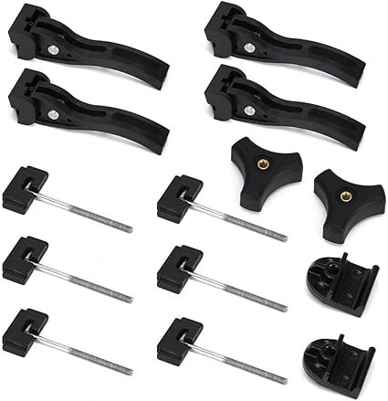
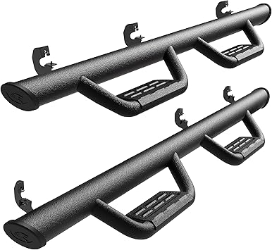

May 2026
The honest truth about scoutterratruck: most products are decent. What separates good from great are details you won't find in a product listing.

→ #1 — 2PCS Roll Bar Grab Handles Compatible with Ford Bronco Jeep Accessories — Highly reviewed

→ #2 — Turn Signal Switch For International Harvester Scout II Terra 1977-1980 — Highly reviewed

→ #4 — Stacool 60PCS Upgraded Tire Repair Rubber Nail Kit with 4 Sizes Fast Self-S — Top rated
→ #3 — Parking Brake Pedal Foot Pad For 1971-1980 International Harvester Scout II — Great value
→ #5 — AUCELI 2PCS Headrest Grab Handles Car Front Rear Seat Back Roll Bar Grip Ha — Highly reviewed
Trusting fake reviews — Look for reviews with photos and specific details. Generic praise is often planted.
Not measuring — "It looked bigger online" is the #1 return reason for scoutterratruck. Measure twice.
Skipping negative reviews — A 4.5-star product with durability complaints tells you more than a 5-star product with 8 reviews.
Blind brand loyalty — Your favorite brand might not make the best scoutterratruck. Stay open to better options.
Good scoutterratruck don't have to be complicated or expensive. Check our updated picks and buy with confidence.